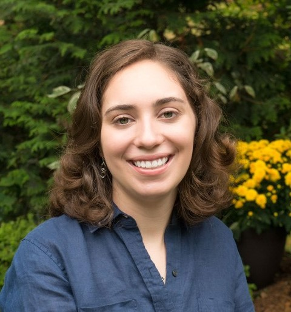

|  | I'm an first year PhD Student at the UC Berkeley School of Information. Previously, I worked as an undergraduate research assistant at the Wellesley College Cred Lab and the MIT Election Data and Science Lab. |
My current research interests are:
I'm especially interested in thinking about these issues through a lens of equity and justice.